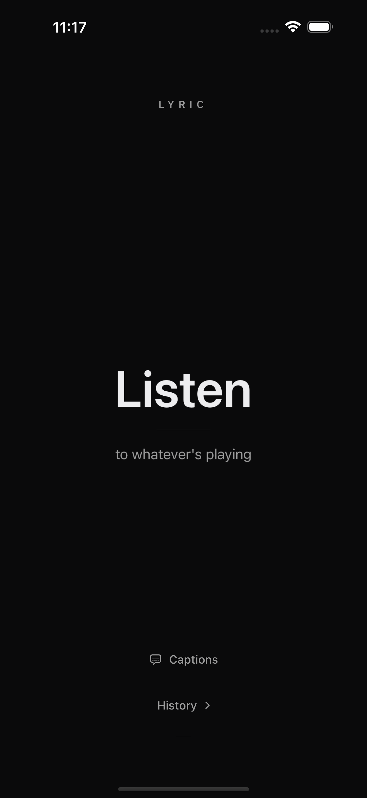
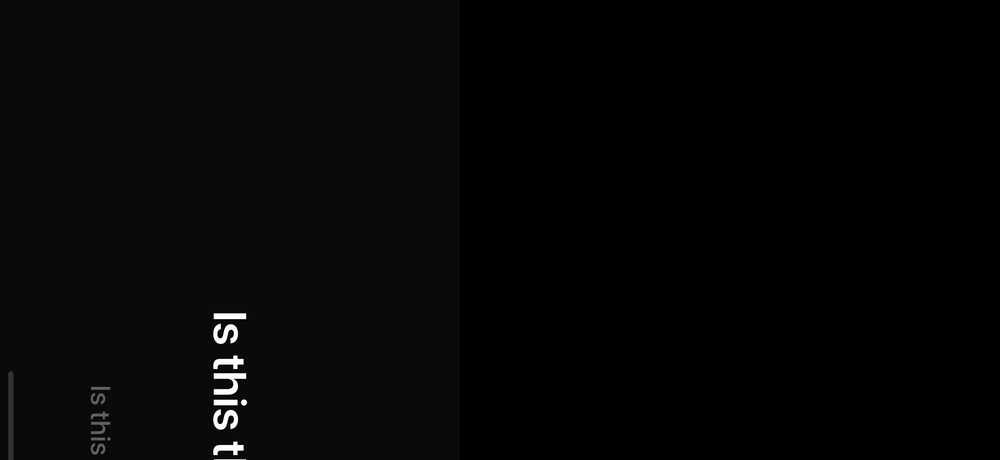

01
ShazamKit song ID
Tap Listen and the app matches the ambient audio in seconds. It works on speakers, radio, a car stereo, or a friend's phone — no Apple Music subscription required.
Live Lyric listens through the mic, identifies whatever is playing with ShazamKit, and fetches time-synced lyrics so the current line is always highlighted. Rotate to landscape for a room-filling hero typography view.



Tap Listen and the app matches the ambient audio in seconds. It works on speakers, radio, a car stereo, or a friend's phone — no Apple Music subscription required.
Time-synced LRC lyrics come from LRCLib first. If a track has no synced version, the app falls back to Genius plain text. Everything is cached on disk for 30 days.
Hold the phone vertically to read the full song with the active line highlighted. Rotate horizontally and the same lyrics become a single oversized line designed for across-the-room sing-alongs.
For songs with enhanced LRC timing, individual words light up as they are sung instead of highlighting the whole line at once.
The last 20 matched songs are stored locally. Tap any previous match to jump straight back into its lyrics without re-identifying.
A personal iOS app for live lyrics — built with SwiftUI, ShazamKit, and zero third-party SDKs.